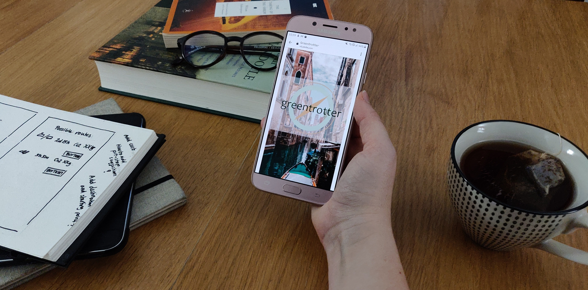

Solution
Greentrotter believe that sustainable tourism should include a meaningful experience and tourist satisfaction [Source 5]. Additionally, they recognize that the opportunity for people to plan and book a sustainable, roundtrip journey is insufficient [Source 6]. That is why Greentrotters have created the Greentrotter travel app.
What sets it apart from other travel booking apps are the options it offers you as a traveller. By taking advantage of algorithms designed to estimate Co2 emissions [Source 7], the Greentrotter app is able to combine all the available forms of passenger transportation and calculate the most sustainable transportation method from and to any given destination within the appropriate time frame.
Once you’ve found your preferred route you’ll be able to book all the tickets you need through our app. No need to stress about contacting all the different transport companies, we’ll take care of that for you. Have limited time for travelling? Don’t worry! Just set the limit for how many days you have available for the actual travelling, and we’ll suggest routes suitable for your time limit. Even though we recommend alternative ways of travelling, you will still be able to view and purchase flight options from the most sustainable airlines.
By using the Greentrotter app in combination with travel destinations suggested on the Globetrotter website, you are given the best tools in order to live a more sustainable globetrotter life. What are you waiting for? Book your next sustainable adventure with Greentrotter!